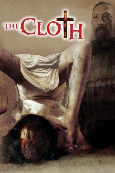

Country:United States, 88 minutes
Spoken languages:English
Genres:Fantasy, Action, Horror
Director(s):Tristan Price
Writer(s):Tristan Price
Video Codec:Unknown
Number: 5148

Certification:NR
Storyline:
Action/horror story centered on a secret organization formed by the Catholic Church to counteract the rising number of cases of demonic possessions across the country. The story follows a young godless man who is being recruited into the cloth in order to prepare a new generation with the tools needed to stop the rise of the ultimate evil; Beelzebub.
Cast:
Kyler Willett (as Jason), Danny Trejo (as Father Connely), Eric Roberts (as Father Tollman), Rachele Brooke Smith (as Julia), Robert Miano (as Lewis)
Medium: Media file,
Location: D:\Personal\Sarah Disk\Documents\Curse\Minecraft\Install\assets\virtual\legacy\sounds\dig\cloth3.ogg
Loaned: No
Aspect ratio: Unknown